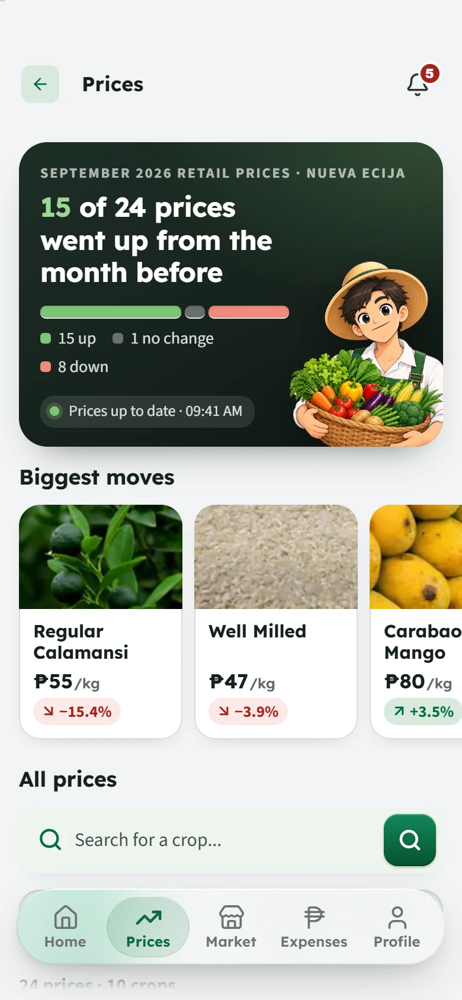
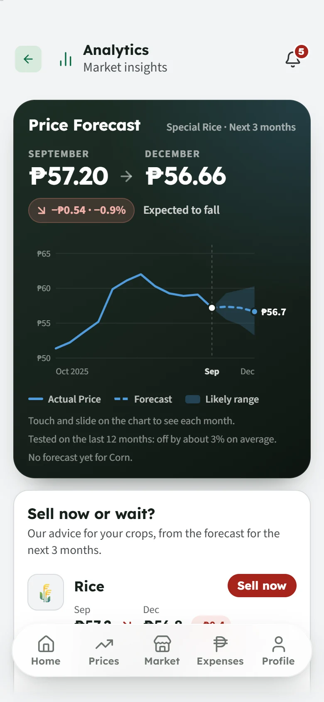
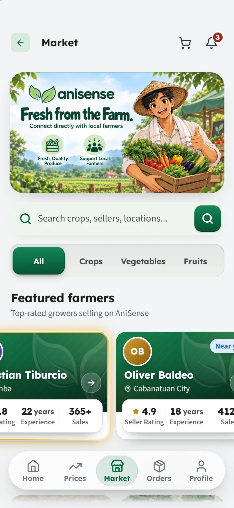
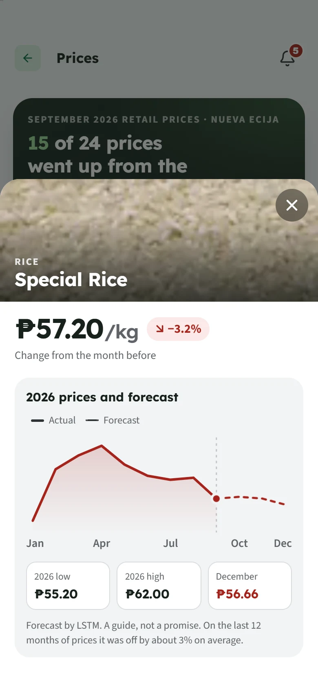
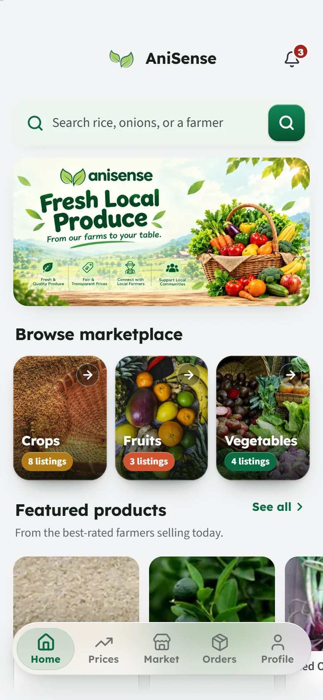
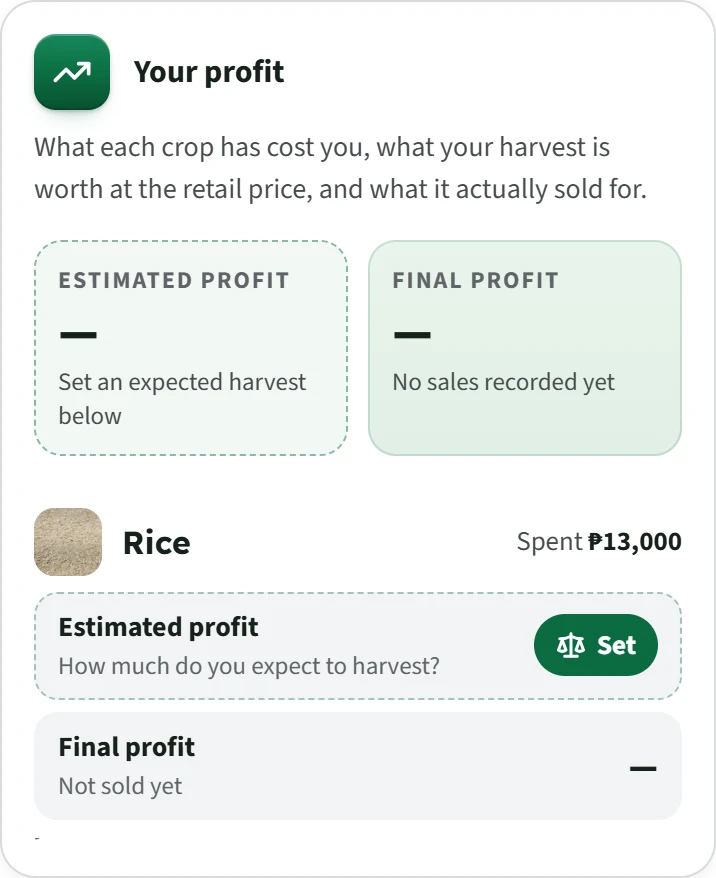
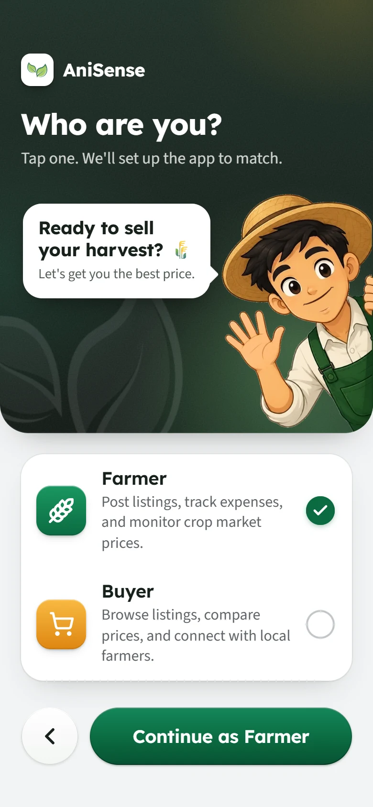
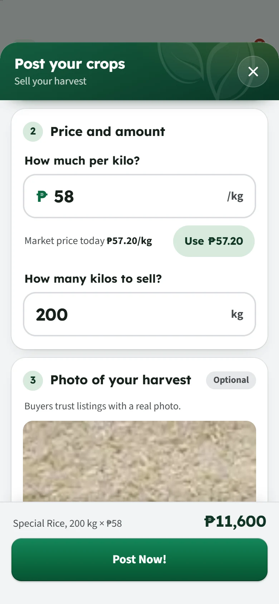
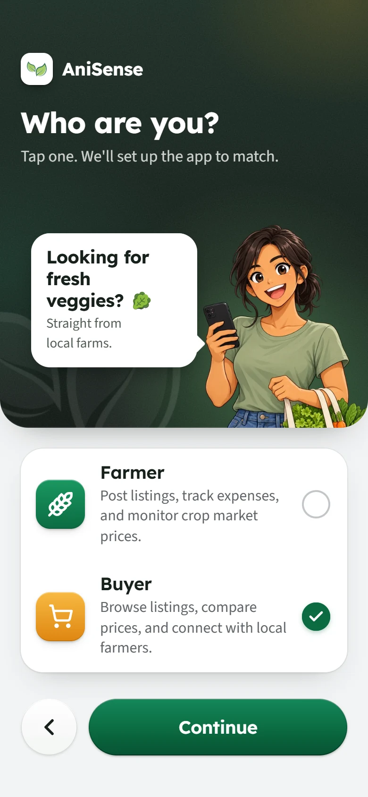
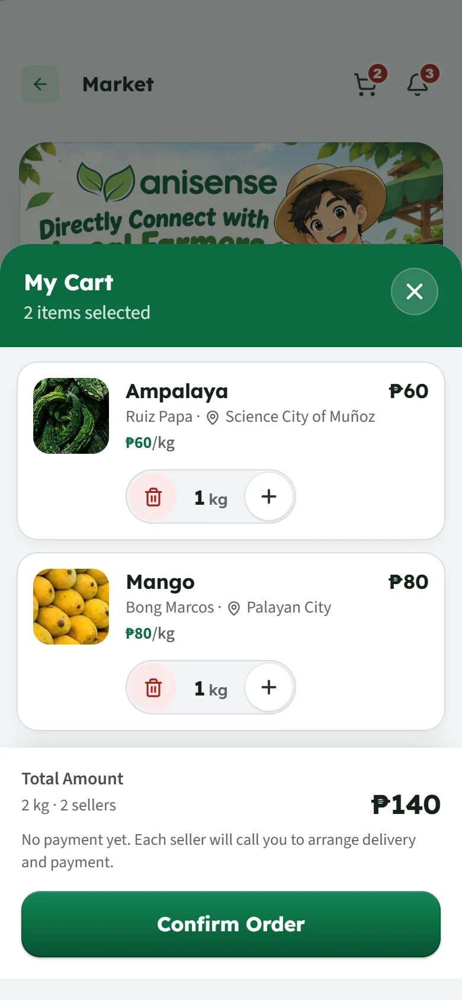

Easy to read
Large text and large buttons, one question at a time.
AniSense shows this month's crop prices, what the next three months may bring, and lets you sell straight to buyers.



crop varieties, from rice to watermelon
monthly price records, back to 2021
of forecast, by ARIMA and LSTM
to use. No paid account, no ads.
Prices
Monthly retail prices for Nueva Ecija, the newest first, with the crops you grow at the top.
See every move. Each price says how far it went up or down from the month before.
Tap a crop for its year. A chart of this year's prices, the low and the high, and where it may go next.
Name your price. Set a price alert, and AniSense tells you when a crop reaches it.

Forecasts
Two models, ARIMA and LSTM, learned from monthly prices since 2021 and were tested on the last twelve months. AniSense shows how far off they were, and gives sell-or-wait advice only when that is 20% or less.
Average miss of the ARIMA model, which gives the advice. No model can see a sudden shock, like a typhoon or an import ban coming: a forecast is a guide, not a promise.
Market
Farmers post what they have. Buyers find it, order it, and call the farmer.

Farm records
Write down what each crop costs and what it sold for. AniSense works out what is left over.
Expenses by crop. Seeds, fertilizer, labor and more, month by month.
Profit, before and after. What your harvest is worth at today's price, and what it really sold for.
Saved on the phone first. No signal in the field? It is sent the moment you are back online.
Yours alone. Only you can see your farm records.

Made for the field
Large text and large buttons, one question at a time.
Switch any time, from the very first screen.
Prices, their history and the forecasts are inside the app.
No ads, and we never sell your information.
Farmers in Nueva Ecija, many of them past fifty, on the phones they already have.
How it works · Farmers
Three steps. Tap one to see it in the app.
Buying? How it works for buyers

How it works · Buyers
Three steps. Tap one to see it in the app.
Farming? How it works for farmers

Questions
Ani mo, alam mo.
Free for farmers and buyers, on Android phones. This page will link to it the day it is out.
Questions? Write to AniSense2026@gmail.com